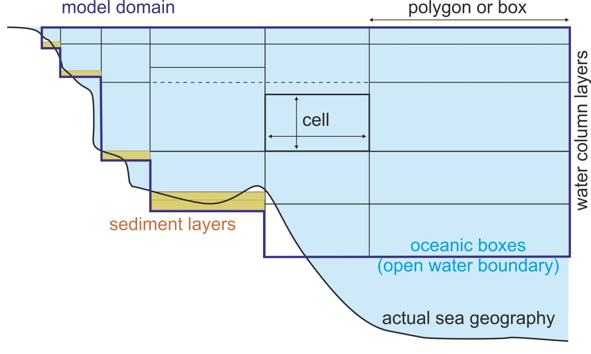
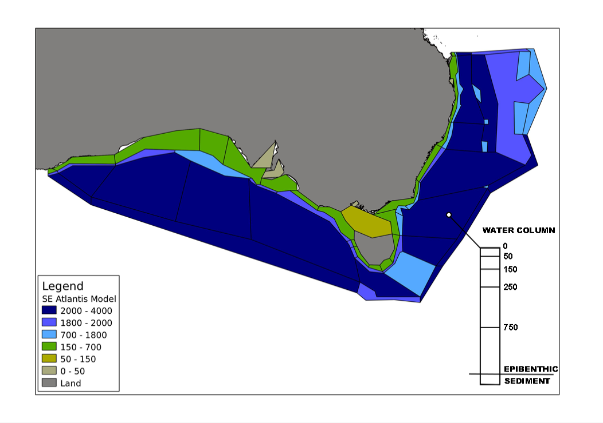
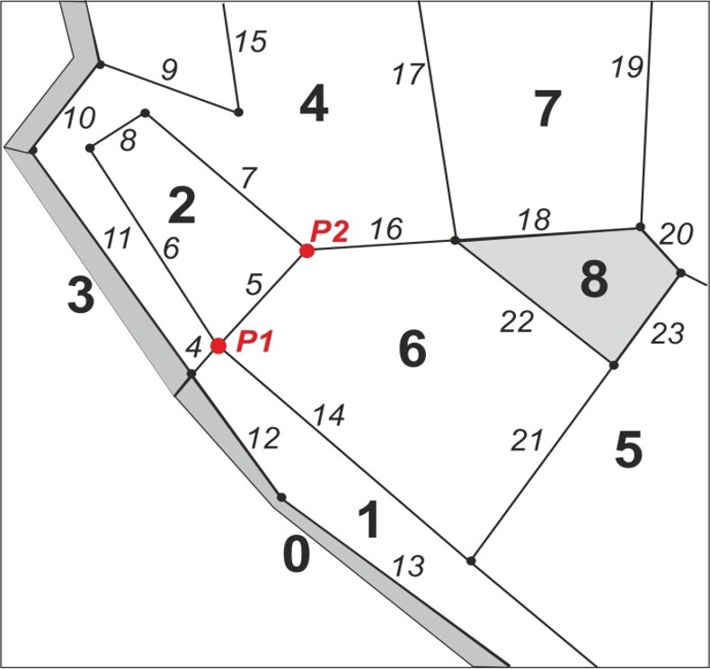
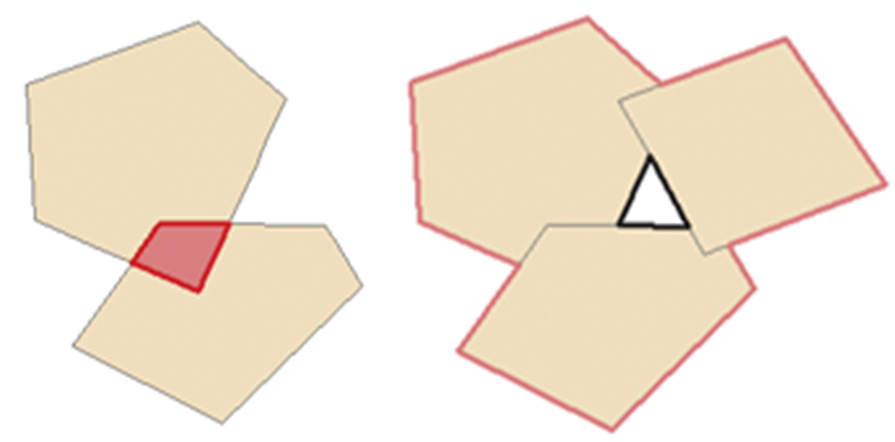

3. GEOMETRY OF THE MODEL DOMAIN
3.1. Boxes and layers defining the geometry of the model
Atlantis is a spatially-explicit model, which means that it simulates spatial variation in biogeochemical and socio-economic processes. The spatial domain or geometry of the specific model consists of boxes or polygons subdivided into vertical sediment, water and optional ice depth layers. Land is also an optional inclusion, represented via sediment layers only. The number and shapes of boxes, as well as a number and depth of vertical layers is defined by the user. One layer of one box is called a cell. A cell is the main model spatial unit. Most biogeochemical, biological or fisheries processes are replicated in each water column cell and are considered uniform within a cell. Movement between the water column cells is by passive advective transfer (forced by hydrodynamic forcing files) or directed active movement. Only sediment relevant processes are executed in the sediments, similarly for ice or land. Direct movement between cells of these special types is not possible for ice or sediments, though some directed movement is possible on land. Movement between the special cell types and water column cells may happen due to processes like deposition and melting.
The advantage of using a unique model polygon and depth domain, rather than a standard grid, is that the user can match the model geometry to the geographical and bioregional features of the simulated marine system. Smaller, higher-resolution polygons can be defined in areas of particular interest (Johnson et al. 2011) while open water areas can be modelled as one or several large polygons saving a significant amount of computational time. This means that you should think carefully about defining the model geometry (and forcing file conversion, see Chapter 4). Models focused on coastal fisheries often use bathymetry to define polygons, picking boundary isobaths that are important predictors of species distribution or fisheries management zones - such as states, provinces or marine protected areas. Oceanographers may want to isolate areas with persistent currents, eddies, or other oceanographic features. Biogeographic breaks (headlands, capes) may also be important to consider. Finally, the spatial distribution of biological and fisheries data, and the spatial scale of interest to stakeholders and other users of your model also need to be considered.
In principal users can setup very complex shaped polygons, however, the number of polygons and faces between them will determine the speed of calculations. Remember that all biological and fisheries process calculations are repeated in each layer of each polygon!


Figure 4. Top: An example cross section of an Atlantis model, showing water column and sediment layers. Oceanic boxes have an open water boundary at the bottom of the deepest water layer. The depths of vertical layers do not have to be the same in all boxes, although most models keep them identical for simplicity (shown with horizontal dashed line). The depth of the bottom water column layer varies depending on the geography of the marine system. Bottom: An example of the horizontal Atlantis model domain (set in the BGM file)
3.2. How to define a geometry file for a new model?
The first step in developing a new model is to define the two-dimensional domain specified in the BGM file. Atlantis was created prior to the development of shapefiles that have now become a standard in GIS applications. Hence Atlantis uses its own BGM file format (see wiki BGM file page), which was a common format for many early box models. These days the developers of new Atlantis applications typically define model geometry and shapes of the polygons using GIS tools, but any other alternative approaches that can provide geographic representation can be used. The GIS tools can export shapefiles, which are converted into the Atlantis-specific BGM file using specially written packages. A new R tool (rbgm, see below) is also being developed to enable users to convert files from GIS or other spatial editing applications directly to BGM files, skipping the shapefile stage (see below). The BGM file is also used by some software packages, such as Dive or Olive, for spatial visualisation of Atlantis outputs.
Details of the model geometry are defined in the BGM and intial_conditions.nc files.
The BGM file defines the two-dimensional geometry of the model domain. It includes information on boxes, their shapes, midpoints, faces. It also specifies the maximum depth of the modelled ecosystem and maximum depth of each box.
The initial_condition.nc file includes further information on the three-dimensional geometry, specifying numbers and depth of the vertical layers in each box. The maximum number of water column and sediment layers is set in the global attribute section in the initial_conditions.nc file (wcnz and sednz parameters). The actual number of water column and the ID of the top active sediment layer (typically 0) in each box is then given in the numlayers and topk parameters given for each box.
Nominal or initial depths of the water column and sediment layers are set in the initial_ condition.nc nominal_dz parameter. Typically they are set to be identical among boxes (see Fig. 4 top panel), except for the bottom layer, but this is not strictly required. The actual depths of the water column and sediment layers can change dynamically through the simulation and are stored in the dz variable. The maximum change in water column depth is set in wc_dz_tol , whereas minimum and maximum depth of the sediments layer(s) is set in the minseddz and maxseddz parameters in the physics.prm.
The optional ice layers are included as a fourth dimension in the initial_conditions.nc file. Modelling ice in Atlantis is still under development, see chapter 5.5.2.
There are two main types of boxes: dynamic and boundary. The corners of each polygon are defined by vertices and the lines connecting these corners are called faces.

Figure 5. Example of an Atlantis model geometry (part of a model domain). Boxes are numbered in bold, grey boxes indicate boundary or island (land) boxes. Faces are numbered in italic numbers. Vertices are shown as dots; vertices P1 and P2 describe face 5.
Dynamic boxes make up the model domain; all biological and socio-economic processes are modelled in them. Dynamic boxes must satisfy the (approximate) requirement of mass conservation1, although their volume can change slightly due to currents and tides (just as seen in the real world). In dynamic boxes numeric fluxes of a tracer (e.g. NO3, phytoplankton) due to ecological processes (such as growth and mortality) cannot exceed a certain proportion of its standing biomass. This proportion is set by the RelTol parameter in the biology.prm file (but see the note below on relax_tol).
Boundary boxes are used only as sources and sinks for advective transport. They represent the “outer world” or the system beyond the model domain and don’t have the requirement of mass conservation. The areas of boundary boxes play no role (they can be set as tiny slivers or large boxes) and there are no water or tracer movements between boundary boxes. Islands inside the model domain are modelled as boundary boxes (unless land has been activated in the model by setting flagAllowLand to 1 in the run.prm file). In models where land is not active islands and other land boxes have zero depth (box 8 in the Fig. 5). However, when land is active (only in the most recently development versions of Atlantis) explicit modelling of land is allowed (see chapter 5.5.1), these boxes use a positive value for total box depth (botz) rather than the negative values used for aquatic boxes.
In the vertical dimension the polygons can be either non-oceanic or oceanic. Sometimes the Atlantis model does not capture the full depth of the marine ecosystem. For example, the actual maximum depth in the modelled ocean area can be 3500 m (shown in the maxbotz parameter in the BGM file), but the model domain only includes the top 2000m (box-specific botz parameters in the BGM file). The polygons for which botz is greater or equal to maxbotz are classified as oceanic (e.g. a maxbotz of -2000 versus a botz of -3500). This means that the bottom water layer in these polygons has an open water boundary with deeper (not explicitly modelled) waters rather than with a sediment layer. In oceanic boxes the sediment layer is still included in the setup (for simplicity) but sediment calculations are not performed in these boxes when the model is run and the biomass of organisms in the sediments are not included in the total biomass calculations. Further, the deepest layers of the oceanic boxes receive nutrient input from “outside” of the model domain, designed to simulate nutrient mixing from deeper layers not included in the model domain.
Below is an example of a BGM file with explanations of parameters given after #
# box model geometry based on VMPA_setas_20051216.bgm
# conversion from lat/long space to x-y space of the model domain. Required for mapping and light level
# calculations (when lim_sum_hours is turned on in the biology.prm file). Definition is based on GIS standards
# The parameters should be space separated
projection proj=aea lat_1=-18 lat_2=-36 lat_0=0 lon_0=134 x_0=3000000 y_0=6000000 ellps=GRS80 towgs84=0,0,0,0,0,0,0 units=m no_defs
# Number of boxes in horizontal plane
nbox 11
# Number of faces in horizontal plane
nface 22
# Maximum bottom depth (m) of the model domain (not the real ecosystem)
maxwcbotz -5000
# vertices of the polygon defining the boundary of the dynamic model space throughout the total geographical
# extent of the model, creating one big polygon. They are ordered sequentially in either clockwise or
# anticlockwise direction (it doesn't matter which so long as it remains consistent) in (x,y) format, where x,y is
# in projected (linear transformation) of longitude and latitude
bnd_vert 4227984.241 1449270.8
bnd_vert 4279136.436 1451037.995
bnd_vert 4684173.263 1362498.346
# ... and so on for all vertices
# Data for box number 0 ## user defined box number identifier
box0.label Box0 ## users reference box name, e.g. Box0 or Sydney Harbour
box0.inside 4043667.571 1150676.493 ## midpoint of polygon
box0.nconn 5 ## number of faces shared with other dynamic boxes
box0.iface 1 10 11 13 17 ## id numbers of shared faces, each face has a unique id
box0.ibox 0 2 2 2 2 ## box that each shared face corresponds to
box0.botz -370 ## maximum depth of the polygon in the real ecosystem
box0.area 3261982282 ## area of the box, m²
box0.vertmix 0.000001 ## vertical mixing scalar for the polygon
box0.horizmix 1 ## horizontal transport scalar for the polygon
box0.relax_tol 0 ## whether relaxing flux tolerance for this box
box0.vert 4005591.597 1198429.099 ## List of vertices (x,y) in clockwise or counter clockwise order
box0.vert 3998613.455 1174049.433
box0.vert 4065533.389 1102640.49
box0.vert 4095090.658 1128446.461
box0.vert 4095245.855 1128504.676
box0.vert 4005591.597 1198429.099
# ... and so on for all boxes
# This section describes each dynamic face (faces of all non-boundary boxes)
# Data for face number 0
face0.p1 4005591.597 1198429.099 ## one endpoint of face (x1,y1)
face0.p2 4095245.855 1128504.676 ## other endpoint of face (x2,y2)
face0.length 113698.3335 ## length of face
face0.cs -0.788527462 0.614999546 ## Cosine and sine of the slope of the face (slope=sine/cosine)
face0.lr 2 0 ## Number of the box to the left and to the right as you look
## from point 1 to point 2. Correct orientation is crucial! (see below)
# ... and so on for all facesThere are times (e.g. during an extreme event, which might be implemented for a specific scenario, or if including restocking/replanting of seagrass for example) when the flux of a variable can legitimately be at a level that would breach the flux tolerance checks in place to ensure numerical stability (as conditioned by RelTol set in the biology.prm). To allow for this there is a property per box in the BGM file, box#.relax_tol , which is typically set to 0 unless absolutely required.
Below are some strict rules and best practice suggestions on setting up the model geometry. These rules are provided here to give general insights into how the geometry file is setup. If you are developing a BGM file for a new model, check more detailed instructions on Atlantis wiki (links given below).
Rules:
Box 0 must be a boundary box and Box 1 must be a dynamic box. This rule is a developmental legacy and determined by the way the Atlantis code and oceanographic file conversion was setup during the model development. Box 0 is special because it is set up to have water and nutrient fluxes to nearly all other model boxes. This is set to simulate supply of advective tracers to the oceanic boxes and accommodate any missing water fluxes due to conversion of oceanographic files into Atlantis input files (see chapter 4). While the model is running it also acts as a store for information on any migrating groups currently outside the model domain.
Doughnut shaped boxes are not allowed. For example, you cannot have one box around an island. This is because such boxes have their midpoint on land, which would affect calculations of a number of processes relying on midpoint values.
The description of boxes, faces and vertices in the BGM file (iface, ibox, bnd_vert parameters) must be done in the same orientation – clockwise or counter clockwise. It doesn’t matter which you chose, just make sure it is consistent throughout. The orientation can be checked using the Checkwinding package developed by Cameron Ainsworth and available from the Atlantis wiki.
Islands must be represented as boxes with a depth of 0 (or >0 if land is active), not as empty regions. By default the land boxes are either treated as boundary boxes, but can also be modelled as land, if the land option is activated (see chapter 5.5.1).
It is of utmost importance to correctly identify the boxes to the left and to the right of a face in the
face#.lrparameter (where # stands for the box number). The points P1 and P2 in the Figure 3 describe face 5 between boxes 2 and 6. Ifface5.p1is given as P1 andface5.p2is P2, then left and right boxes are designated as you look from P1 to P2. This means the right box is 6 and the left box is 2 andface5.lrmust be set as 2 6. Setting the direction incorrectly inverts the direction of the flow in the hydrodynamics forcing file! Checkwinding package will check the file for correct right/left designation.The midpoint of a polygon is defined in the
box#.insideparameter. It is used to: i) calculate the temperature in a box when temperature forcing data is not provided and we are in the southern hemisphere; ii) calculate the sunrise and sunset values based on lat/long when lim_sun_hours is set to 1; iii) calculate distance between boxes and invasion speed if the invasion option is active; iv) calculate distance from a box to a port in the dynamic fishing code. If the midpoint of the box is misplaced and is not within the actual box, Atlantis will quit when trying to read time series that deposit something into that box or when running dynamic fishing routines.
Suggestions:
Keep the number of boxes as small as possible (fewer than 90 is good), remember the fewer the boxes the faster the model will run (e.g. models with 20-30 boxes will run three to four times faster than one with 90 boxes!)
Keep the number of dynamic faces (those corresponding to non-boundary boxes) to less than 400, but 100-200 would be even better! It is not recommended to have boxes with very complex shapes (i.e. do not slavishly follow complex isobaths in the GIS when drawing up the box shapes). This is because complex box shapes are 1) is prone to error and 2) may give a false impression of reality. Simple shaped boxes serve as a good reminder that the spatial results presented are only model simulations and should be treated as such.
When setting up box shapes in GIS, make sure the topology is perfect, which means no gaps or overlaps between polygons. If the shapefile has overlaps or gaps it won’t convert to the BGM file.

- In some cases conversion of water fluxes from oceanographic files to Atlantis hydrodynamic forcing files leaves small coastal boxes isolated, i.e. no water fluxes enter or leave them. This will be covered in more detail in Chapter 5.4. The BGM file has two box-specific water mixing parameters that are used in some physics routines, including those used to correct for the lack of mixing. These parameters allow box-specific mixing scalars to be setup and help to tune vertical and horizontal water flows in the model domain:
box#.vertmix - vertical mixing scalar used only when vert_diffusion or vert_mix are turned on in the physics.prm.
box#.horizmix – horizontal mixing scalar that can be used to correct for hyperdifusion (if insufficient correction was done during the file conversion stage, see Chapter 5.4). It is also used as a box-specific scalar if fill_zero_exchange or horiz_diffusion flags are turned on (set to 1) in the physics.prm file (see Chapter 5 for further details).
3.3. Practical steps for building the BGM files from GIS shapefiles
1. Define polygons using QGIS or similar GIS package. This will produce a shapefile of the model domain. The shapefile is the master of the model geometry, any changes should be made to the shapefile and the BGM should be recreated from that master. Hand editing of the BGM should be avoided2, other than to manually set the box-specific mixing values, or to correct any issues resulting from BGM generation (like misplacement of the inside point). See the Atlantis wiki BGM file page for more information.
2. Run the BGMeriser package, to convert shapefiles into BGM files. Details on access and installation are given on the wiki (here) as are details on how to run it (here).
3. If the shapefiles do not pass through the BGMeriser, they probably have issues with gaps or overlapping polygons and should be cleaned. Check the instructions on the wiki for tips on cleaning up the shapefiles using QGIS.
4. Use Checkwinding to check the orientation of boxes and faces in the BGM file
Please keep in mind that shapefiles do not preserve all information about the faces among the boxes (see chapter 3.5). Shapefiles only enumerate faces, but they do not give information about their orientation. They also do not preserve topological information among boxes, i.e. their relationship to one another. Correctly created shapefiles include user defined extra attributes to contain the additional information required to generate a BGM file. However, when shapefiles are edited in a GIS, all face information may change, especially if some boxes are added or deleted. This is why BGMeriser must be run after each shapefile amendment. This is an important disadvantage of using shapefiles for Atlantis model geometry and a new R package is being developed to allow users create BGM files directly from GIS or other applications, without having to use shapefiles (see chapter 3.5).
3.4. How to view your model geometry?
The two-dimensional model geometry is now defined in your shapefiles and in BGM files. The shapefiles can be viewed using QGIS or a similar GIS package. If shapefiles are not available, BGM files can be converted into shapefiles using BGM2SHP package.
The BGM files are also read by various tools used to visualise Atlantis outputs in a spatial context, listed in chapter 2.9
3.5 Using R for BGM geometry
There is an R package rbgm for working with BGM files contributed by Michael Sumner. The aim of the package is to provide a common platform for reading and writing BGM files, which then also can be used by other Atlantis R applications that require information on the model geometry. Generally, shapefiles do not store all information required to completely re-create a BGM file. One needs at least a line shapefile and a polygon shapefile to store what is in the BGM and also some notes to go with it, which is why a shapefile is only a starting point for a BGM file. Note that BGMeriser will create a valid BGM file from a shapefile, but it has to be configured in the right way.
Using rgbm you can
read the BGM format, maintaining all topology and attributes
convert from BGM to GIS-like objects using the Spatial tools in R (sp package)
The “GIS-like” object is an R equivalent of a “shapefile”, which consists of “layers” of geometric shapes (polygons, lines, or points) that are linked to a table of attributes. The BGM geometry is really a combination of information on lines (faces) and polygons (boxes), where each face has information about its orientation and its neighbouring faces and boxes. R uses Spatial layers for separate description of a SpatialPolygonsDataFrame (a polygon shapefile), SpatialLinesDataFrame (a line shapefile) and SpatialPointsDataFrame (a point shapefile).
Once the BGM is loaded in R, it can be used to visualise faces and boxes as lines and polygons, and use these objects to extract data from other sources, like doing spatial queries with other map data, extracting gridded data summaries, and using these for visualization or further analysis (see rbgm description for further information). A goal for rbgm is to drive coupling of Atlantis with physical data and models via R. rbgm is able to write from Spatial forms to shapefiles and other formats, but since we can read directly from BGM or from a GIS or geodatabase, this also means that we don’t necessarily need to create shapefiles at all (soon rbgm will be able to create BGM files after reading the input from QGIS or Manifold GIS projects).
A collection of publicly available BGM files from existing Atlantis models is also available. This collection can be viewed using an R package bgmfiles.
Footnotes
A small amount of mismatch (typically to cover rounding error) is allowed over the total fluxes in a cell in any one time step, but if it becomes too large (i.e. exceeds the flux tolerance set in the biology.prm file, with typical values being on the order of 0.2 mgN*m-3 per second) the model will quit and provide a warning message, as this indicates that there is a problem with the parameterisation↩︎
Expert users may be able to tinker directly with the BGM file, but extreme care should be taken and it should be documented so any future users can understand the changes made (as the master shapefile file will no longer 100% match the model geometry).↩︎